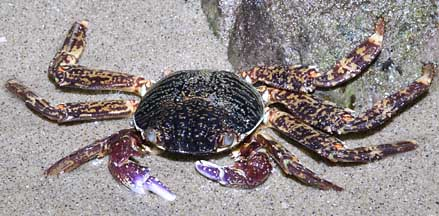
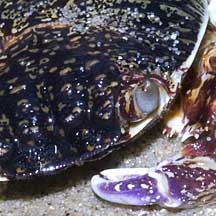
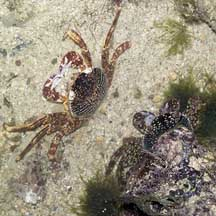
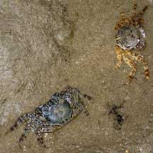
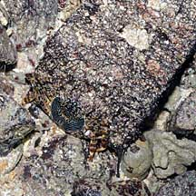

|
|
| crabs text index | photo index |
| Phylum Arthropoda > Subphylum Crustacea > Class Malacostraca > Order Decapoda > Brachyurans > Family Grapsidae |
| Sally-light-foot
crab Grapsus albolineatus Family Grapsidae updated Dec 2019 Where seen? This colourful and swift crab is sometimes seen on our some of our rocky shores. Small groups may clamber noisily among rocks on seawalls or natural rocks. Sometimes, it may also be seen on the reef flats near the rocky shore. It is more active at night and seldom seen during daylight. Very shy, it disappears instantly into crevices at the slightest sign of danger. Or it may flatten against the encrusted rocks, where it blends in with this surroundings. Features: Body width 5-6cm. Body circular, flat, dark with a pattern of light spots in bands at the lower portion of the body. Pincers very short flattened. Very long walking legs tipped with pointy claws. With these legs, the crab clings tightly so it doesn't get washed away in the waves, and can scramble quickly among slippery rocks. Colours seen range from reddish to bluish and greenish. 'Alba' means 'white' and 'lineatus' means lines. The body indeed has fine white lines. Males have larger pincers than the females. Sometimes mistaken with the Scaly rock crab (Plagusia squamosa) which has a more squarish less flat more bumpy body. What does it eat? It is a scavenger and also eats seaweeds. It has relatively small pincers that work like scissors to snip and scrape off edible titbits. |
|
 East Coast, May 11 |
 |
|
|
 Moult at top left corner, crab in bottom right. Sisters Islands, Jan 06 |
 A moulted crab (blue) with moult (orange). Sisters Islands, Jul 04 |
 Flattened against an encrusted surface. Kusu Island, Sep 10 |
| Sally-light-foot crabs on Singapore shores |
On wildsingapore
flickr
|
| Other sightings on Singapore shores |
|
Links
|